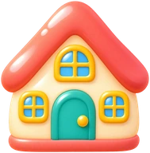

연동 흐름 그림 · 결정 #37 · docs/architecture.md 19장
차 · 공유 서버 · 가족 폰은 이렇게 이어져요
규칙은 차가 주인서버는 내용을 못 읽음

차 (Pleos)
같이가숲 차 앱
★·소품·숲 칸 규칙을 확정하는 곳
가족 열쇠를 Keystore에 보관
주차 중: 연결 QR · 승인 · 동의
보내는 것
숲 상태(바뀔 때)
진행률·남은 시간(15초 또는 1%)
대략 위치(켰을 때만, 5km 칸)
잠긴 상태 →
⇢
⇢
⇠
← 폰 요청
← 폰 요청
공유 서버
가족마다 작은 방 하나
Cloudflare Workers + Durable Objects
잠긴 숲 상태 1개 · 요청 대기열
잠긴 진행 상태 1개(24시간)
서버가 아는 것
가족 번호, 기기 키의 해시, 크기와 시각
별명·숲·위치는 못 읽음(종단 간 암호화)
주소에 토큰 없음 · HTTPS만
→ 숲·진행 보기
⇢
⇢
⇠
꾸미기·사기 요청 ←
꾸미기·사기 요청 ←

가족 폰
같이가숲 폰 앱
우리 차 진행·(허락 시) 대략 위치
아이 숲 보기·꾸미기 · 상점·보관함
같은 규칙으로 먼저 보여 주고 차가 확정
여러 가족 폰
엄마·아빠·할머니 폰을 각각 연결
폰마다 권한(숲 / 진행 / 위치)
끊으면 바로 접속 불가
1. 연결
주차 중 차 화면 QR(5분·1번) → 폰이 찍음 → 차에서 보호자가 [연결]. QR 안의 가족 열쇠는 서버를 거치지 않아요.
2. 꾸미기
폰에서 저장 → 서버 대기열(순서 번호) → 차가 규칙대로 적용 → 새 숲 상태를 올림 → 모든 폰에 보임.
3. 충돌
★·소품 개수는 차가 확인(모자라면 거절). 같은 맵은 마지막 저장이 남고, 덮였으면 알려 줘요.
4. 멈추기
위치 끄기·도착·24시간이면 진행·위치 삭제. 폰 끊기는 즉시. '모두 끊고 지우기'는 가족 기록 전체 삭제.